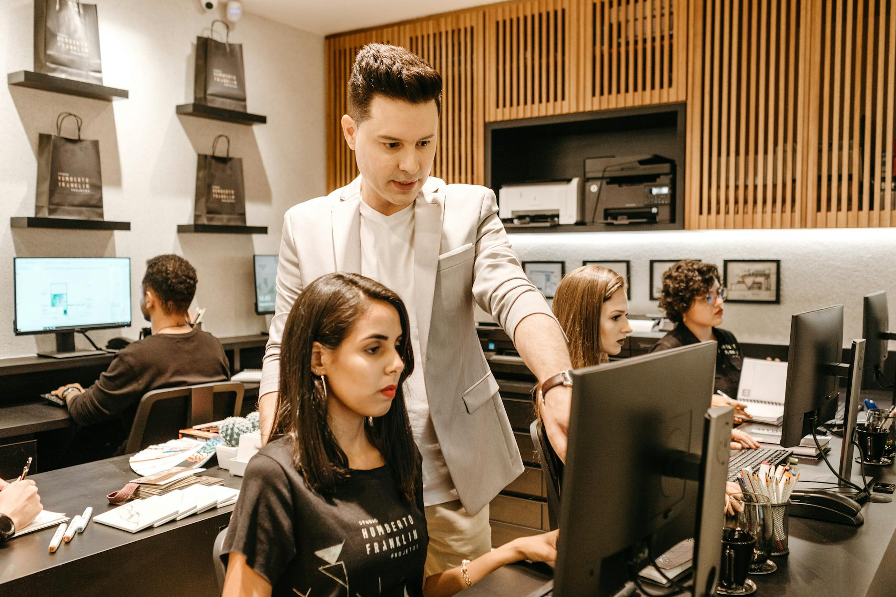

Executive Summary
Our A2A framework enabled multiple AI agents to share context in a customer support environment. Routine inquiries were resolved end-to-end without human intervention, freeing staff to focus on complex requests.
The coordinator agent routes issues to specialized bots while maintaining a single conversation history. This approach handled over 10,000 interactions per week with a 92% satisfaction rating.
About the Client
The client is a mid-sized telecommunications provider serving half a million customers across the Midwest. With call volume rising year over year and a workforce already stretched thin, the company sought innovative solutions to maintain high service levels without drastically expanding headcount.
Their support operations span phone, chat, and email. Prior automation attempts relied on static scripts that quickly fell out of date, leaving agents to perform repetitive data entry. Integrating modern AI while preserving legacy systems was a key requirement.
The In-Depth Challenge
Support teams were overwhelmed with repetitive questions. Agents spent nearly 70% of their time on password resets, billing inquiries, and basic troubleshooting rather than high-value retention tasks. This not only impacted morale but also led to longer wait times and a dip in customer satisfaction scores.
Leadership needed a scalable way to deflect these routine tickets while ensuring that escalations were handled smoothly. Previous chatbots could not share context across channels, forcing customers to repeat information and generating frustration.

Technical Deep Dive
We orchestrated a collaborative set of AI agents that could access shared context and resolve issues autonomously. Our approach relied on a central knowledge store built on a vector database. Each incoming request was first parsed by an intent classifier. From there, domain-specific agents—billing, tech support, and device activation—leveraged retrieval‑augmented generation to craft responses.
The system was integrated into the existing CRM using webhooks and a lightweight Python middleware layer. Conversation state is preserved via a Redis-backed session service so customers never repeat themselves across chat, email, or voice.
The architecture diagram below outlines these interactions.
Quantifiable Results & ROI
Within three months of deployment, first-contact resolution improved by 35% and average response times dropped to under thirty seconds. The company estimates it saved $500k annually by reducing overtime costs and lowering agent attrition.
Most importantly, overall customer satisfaction increased eight points and the client reports a noticeable uptick in positive survey comments mentioning quick resolutions.
Client Testimonial
"ExpertTech's multi-agent system revolutionized how we handle support. Our team can finally focus on proactive outreach instead of constantly putting out fires." – Director of Customer Experience
The director noted that after launch, call center turnover decreased because agents could concentrate on solving complex problems rather than repeating scripted answers.
